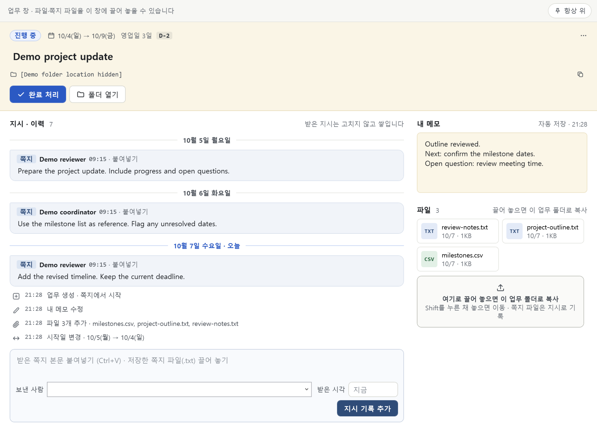
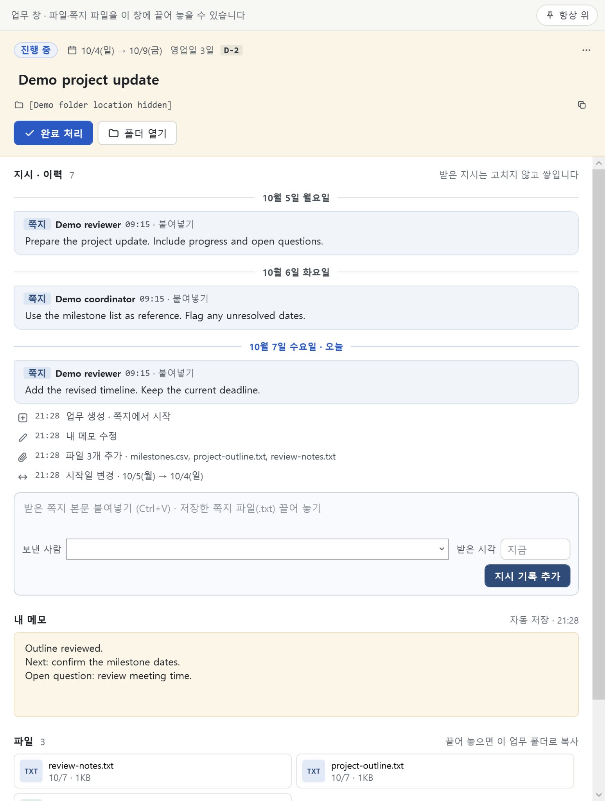
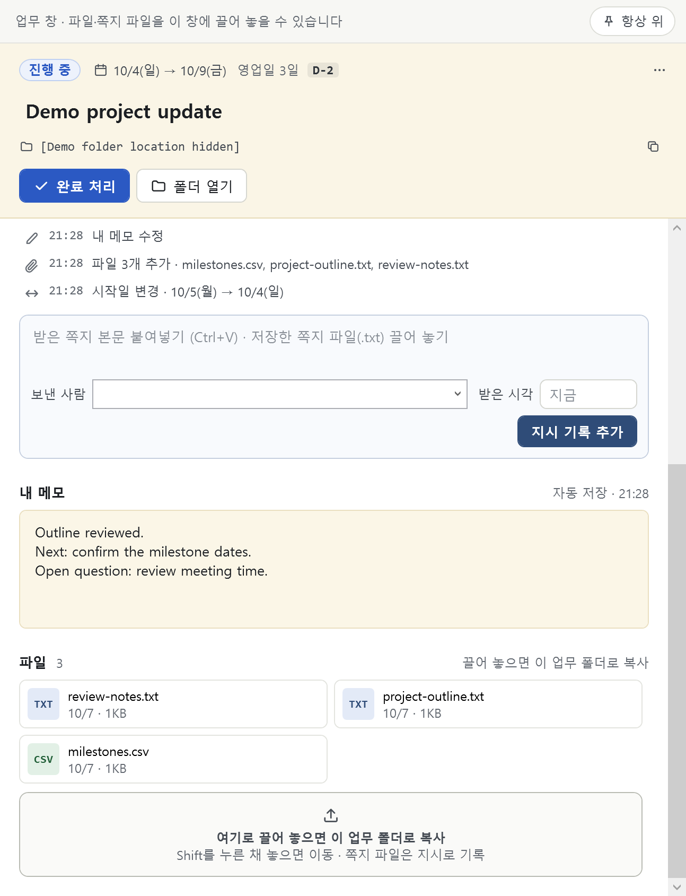
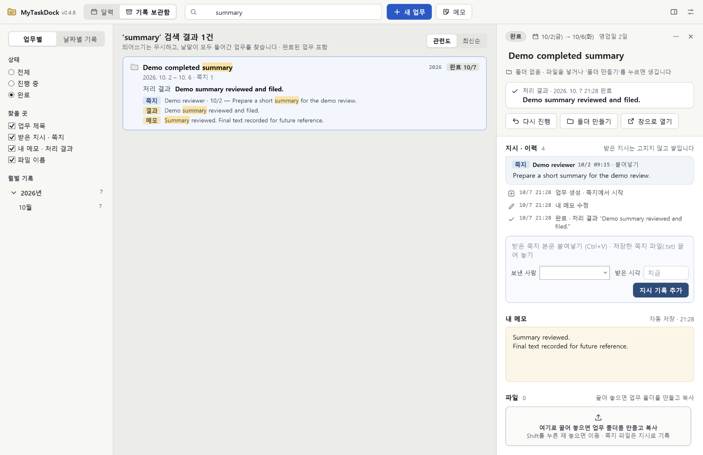
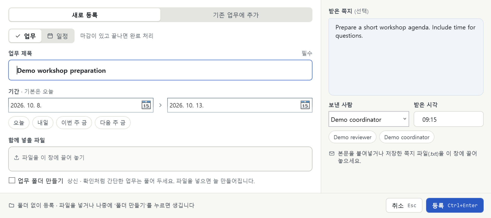

Capture the request
Create a task, choose its dates, and add the instructions or files you already have.
A task is more than a deadline. Keep the instructions, working notes, local files, and result together — then find them again after the work is done.
The request arrived in a message. The files ended up in a folder. The outcome lived on a sticky note.
MyTaskDock brings those pieces back to the task. Not just what to do — but what was requested, what changed, and how it ended.
Six views from version 0.4.8. Explore the current interface with fictional example data.

Open a task to see received instructions, activity, a working memo, and related files in one place. Keep it in the main window or open a separate task window.
Place tasks on the calendar and use the work shelf to review overdue, today’s, and upcoming work. Appointments can carry their own time.

Add received instructions with sender and time details. Revisit them alongside recorded actions such as date changes, file additions, and completion.

Collect working files in an ordinary local task folder. A simple task can stay folderless and gain a folder when files are added.

Complete a task with an optional result, then find it again in the archive. Its record and files remain unless you explicitly delete them.

Enter a title and dates, then include an instruction or files before saving. Create new work or add context to an existing task.
Product images: actual compiled WPF views, rendered with fictional example data. The current app uses a Korean interface; English task text is sample content.
Built for individual, file-heavy work on Windows — reports, follow-ups, and the instructions that keep arriving.
Create a task, choose its dates, and add the instructions or files you already have.
Add new requests, update your working memo, and gather the files as work develops.
Complete the task and optionally write what was done. Completion does not delete its record.
Search or browse the archive. Reopen the task when another round of work begins.
The current app saves task data as local JSON and files in ordinary folders. It has no hosted application backend.
Create a quick, folderless task, or add a folder when the work needs files. Independent sticky notes are also available.
The current app has no Claude integration. These are candidate experiments grounded in its task records — not features in development or a promised release schedule.
Turn user-selected instructions into reviewable action suggestions, with references to the requests that support them. Ambiguous dates stay questions, not silent schedule changes.
Selected instructions → suggestions → user reviewCreate an on-demand brief of a task’s requests, notes, changes, and open questions. Keep the original instructions and memo alongside the summary.
Selected task records → source-linked briefHelp write a short result using the user’s statement of what was actually finished. The draft remains editable; only the user confirms completion.
Completion statement → editable result draftBefore any future cloud API call, the product would need a way to select and inspect outgoing text. Suggestions would need review before they change a task. Local storage today does not make a future Claude feature offline.
Beyond the first single-task AI experiments, these additions could be evaluated separately. None is implemented or scheduled.
Later Claude candidate: compare a small set of user-selected archive records, with answers linked to the supporting tasks.
New product idea: local snapshots and a preview before restoration, rather than relying only on manually copying the data folder.
New product idea: reuse a title, memo outline, and optional folder structure for familiar work — without implying a recurring-task engine.
MyTaskDock is an early Windows desktop project for personal work tracking. Version 0.4.8 brings together the calendar, task workspaces, local files, instructions, memos, completion results, and archive search.
Product snapshot: source v0.4.8, reviewed October 7, 2026. The application source is private. Product images use fictional data rather than customer records.
No. The current product is a single-user Windows desktop app. This website introduces it; it is not an online version. Team sharing, cloud synchronization, and web or mobile clients are not implemented.
No. The Claude ideas above are proposals for evaluation. Existing recognition for compatible messenger windows uses local text extraction and Windows OCR, not generative AI. Compatibility and recognition require review or manual fallback.
Task titles, received instruction text and sender details, working memos, completion results, and listed file names. Attached document contents and independent sticky notes are not included in task search.
Completing a task keeps its record and files, but explicit deletion is possible. The activity history is not an immutable audit trail, a complete memo revision store, or file version history.
This page currently presents the early product and its implemented workflow. It does not provide a public download. For questions about the project, use the contact email below.
Questions, workflow ideas, or feedback on the project? Get in touch.